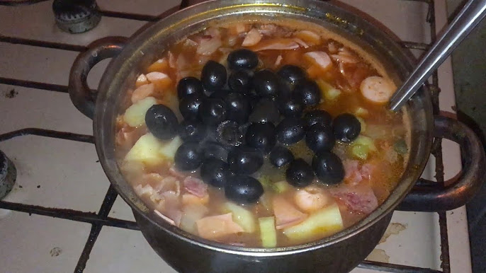

Slavic traditional food - Hruchevo

It's only couple example of hruchevo. Your hruchevo is a mirror of your soul!
Ingredients
Ingredients is not matter, but it's a reciep! Give me your hand and I show you the way!
Open your fridge, It depends on the size of your fridge and the number of shelves in it.
- Something from top left shelf
- Something from top right shelf
- Something from middle right shelf
- Something from middle left shelf
- Something from top right shelf
- Something from bottom right shelf
- Something from bottom left shelf
Steps
- Take as big pot as you can find.
- Pour all the liquid ingredients into it. Boil it.
- Place the remaining ingredients and stew under the lid until ready.
- At the end you can add some spices, but it will not help.
- DONE! Congratulations, you can look in the pot and see there the mirror of your soul!
Don't eat it, realy...
If you want more recipes, tap HERE